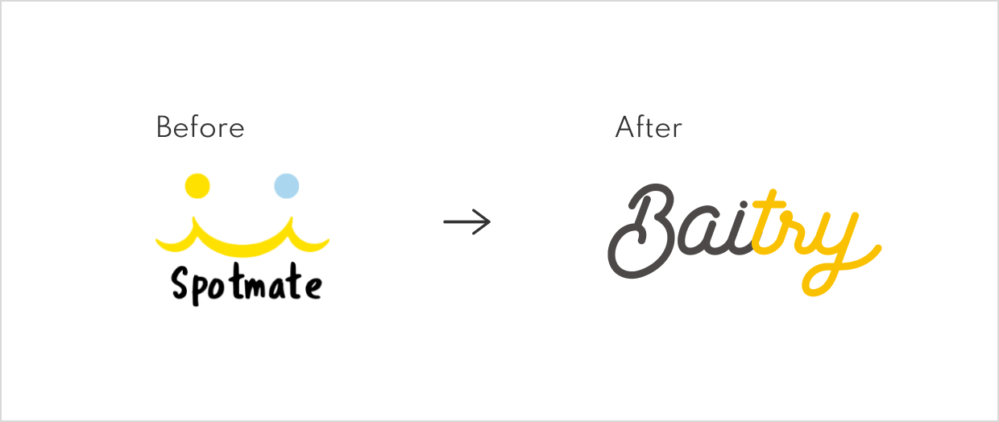
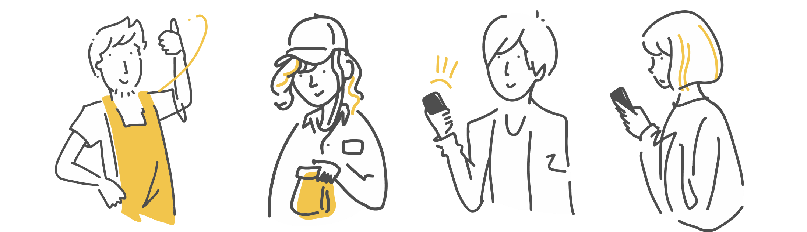

バイトリー リニューアル
担当
UIデザイン
期間
2019年9月〜10月
Introduction
以前はスポットメイトという、「空いた時間（スポット）でバイトができる」の意味合いが強いコンセプトでしたが、今後は、空いた時間（スポット）でただ単にバイトするのではなく、空いた時間を「活用」して「お試しバイトができる」といった方針への変更が挙げられていました。
そこで、改めてネーミングやコンセプトの見直し、そしてコンセプトに紐付いたビジュアルのリニューアル及びUI改善を行っていく必要がありました。

リニューアル背景を元にiOSを要とし、Android、Webへ展開していく流れで進められました。
私は、iOSアプリを担当することになったため、「1.新しくなったコンセプト（世界観）からビジュアルへの落とし込み(リニューアル)」「2.ビジュアルへの落とし込みと同時にUI改善も行う」に取り組みました。
以下、ワーカー側のみ新コンセプトに沿ったイラスト及びカラーが既に画面へ適用されていたため更にコンセプト（世界観）を反映できるよう方針をかためていきました。
Concept
まずは、決定する前に新ロゴに込められたコンセプトの把握を行いました。
Let`s try it together
楽しくて自分にあったバイトを紹介してくれる存在。それがBaitryです。 求人なんて見てもよくわからない..それなら気になるところですぐに働こう。 そんな気軽で楽しいお試しバイトはじまります。
そして、コンセプトの方針を基に、どのようなビジュアルで進めるのかを以下に定めました。
・全体として、単なるバイト探しではなく、「出会いの後押し」として、「気軽で楽しくハッピー」な雰囲気作りを目指す
・ロゴのように、元気さと楽しさ、気軽さを合わせた雰囲気を踏襲する
Visualize
以前は「イエロー ＋ ブルー」の2色で展開されており、ブルーは主にネガティブな印象に使用されていましたが、 今回の、ハッピーな出会いの後押しという意味からもずれてしまう点、そしてメインのイエローよりもブルーが目立ってしまうことからも考えてブルーの使用をやめ、「プライマリーカラーをイエロー」のみとしました。

バイトリーでは「応援する存在」として人感や情緒感を演出し出していきたいと考えていました。 昨今のトレンドとして、App StoreやiTuens、Mac公式サイトなどでもよく見受けられる、 モダンでコンテンツ重視な設計は、バイトリーの「応援する存在」として没入感や情緒感を演出しやすいのでは？と考えました。 また、20代の学生がターゲットという点も含めて今回のプロダクトに反映することにしました。
以前は、重要なコミュニケーションのタッチポイントに上手く活用しきれていない感がありました。
そのためイラストを使用する意味を考え、どう活用するのが効果的かを定義し、以下に合わせイラストの見せ方を変えていきました。
応募する際に無断欠勤や選考辞退を防ぐためのモーダル画面にて、以前のただ文面を並べた注意する画面ではなく、 応募意欲が高いことも踏まえてお店の人との約束事としてポジティブに伝える見せ方をしました。

アプリでは写真登録を必須にできないため、写真登録促進をイラストで魅力的に伝えたり、応募完了や、アップデート画面、お知らせ促進画面など一画面活用して伝えたいメッセージがある時などに イラストを一番多く活用しました。
また、学生の募集管理画面で機械的に募集案件が並ぶ画面にて吹き出しを入れ、応援する存在としてイラストを活用しました。

Output

UI Change
応募から勤務までスムーズに操作できるよう、UI改善を行いました。以下、改善した一部を紹介します。 （大枠の設計はそのままに各画面のUI変更にとどめています）
・確認と編集画面が共存しているが、どちらかと言うと編集、設定していないユーザー向けになっている。
・手軽感や気楽に体験をうたうプロダクトにしては、応募する際の手軽感をあまり感じにくい
・確認と編集画面が共存しているが、どちらかと言うと編集、設定していないユーザー向けになっている。
・手軽感や気楽に体験をうたうプロダクトにしては、応募する際の手軽感をあまり感じにくい
応募時に必ず入力が必要になる画面です。課題としては以下が挙げられました。
・必須項目と任意項目で分けられ、タイトルとして配置されている。普段、必須や任意は補足情報として機能している。
・写真のアップロード条件「3ヶ月以内の撮影、笑顔がベスト」が分かりづらい
画像アップする際のルールなどは割と大事なので目立たせられるようにし、直感的に判別、入力しやすいフォームに変更しました。
以前は、募集管理詳細画面で募集の編集＋選考管理ができるようになっており、 一画面において募集、選考管理のどちらがメインなのか分からずじまいで混乱を招いていました。 募集案件の削除や複製をするためのタブのナビゲーションが一見応募者の削除、複製であるかのように思えます。
流れ
募集管理トップ → 募集管理詳細（募集編集 + 選考管理）

そこで、あくまでも募集管理をメインにおき、募集詳細画面に紐づく情報として選考管理を別画面で設け、遷移させることにしました。
流れ
募集管理トップ → 募集詳細 → 選考管理
本当は、管理頻度も高い応募者管理メインの画面を用意し、タブにもう一つメニューを設けたかったところですが、今回は大きな設計は変更しない前提でしたので、上記の変更にとどめました。
Design System
複数のフリーランスデザイナーさん達と取り組んでいただのですが、スピード重視なこと、 しっかりとしたデザインシステムがなくともある程度データを見て各々進めることができたため、現段階では最低限のコンポーネント整理と スタイルの定義にとどめました。